Three-speaker separation: Librivox, 2 mics
Example 1
| Mixture |

|
||
|---|---|---|---|
| Ground-truth sources |

SI-SDR = -12.23 dB |
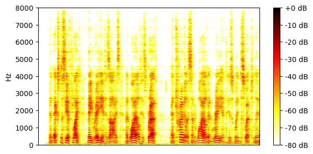
SI-SDR = -6.53 dB |
SI-SDR = 5.25 dB |
| Method | Separated source 0 | Separated source 1 | Separated source 2 |
| TI 64ms x 4 frames, BF2 |
SI-SDR = 1.62 dB |
SI-SDR = 6.17 dB |
SI-SDR = 12.00 dB |
| TI 64ms x 4 frames, MN3 |
SI-SDR = 7.96 dB |
SI-SDR = 8.74 dB |
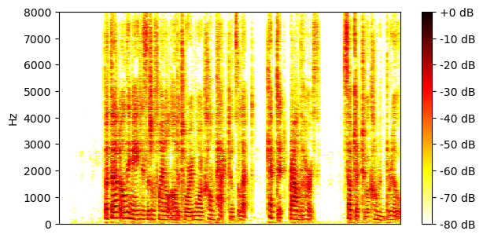
SI-SDR = 15.83 dB |
| TI 64ms x 4 frames, block size 3.2s, BF2 |
SI-SDR = 3.35 dB |
SI-SDR = 6.10 dB |
SI-SDR = 13.32 dB |
| TI 64ms x 4 frames, block size 3.2s, MN3 |
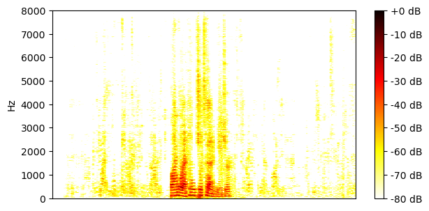
SI-SDR = 6.10 dB |
SI-SDR = 7.25 dB |
SI-SDR = 14.69 dB |
| TV 128ms x 2 frames, BF2 |
SI-SDR = 5.13 dB |
SI-SDR = 7.13 dB |
SI-SDR = 15.13 dB |
| TV 128ms x 2 frames, MN3 |
SI-SDR = 6.19 dB |
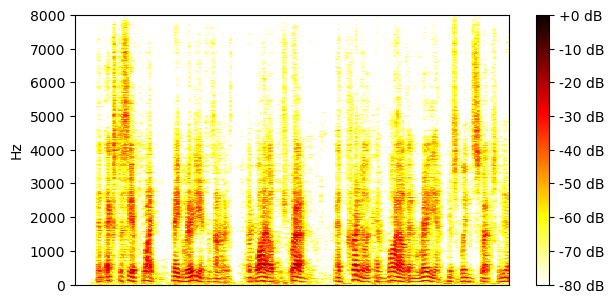
SI-SDR = 7.23 dB |
SI-SDR = 14.81 dB |
Example 2
| Mixture |

|
||
|---|---|---|---|
| Ground-truth sources |
SI-SDR = -7.81 dB |

SI-SDR = 6.32 dB |

SI-SDR = -14.29 dB |
| Method | Separated source 0 | Separated source 1 | Separated source 2 |
| TI 64ms x 4 frames, BF2 |
SI-SDR = 6.57 dB |
SI-SDR = 13.92 dB |
SI-SDR = 1.35 dB |
| TI 64ms x 4 frames, MN3 |
SI-SDR = 9.99 dB |
SI-SDR = 17.54 dB |
SI-SDR = 8.81 dB |
| TI 64ms x 4 frames, block size 3.2s, BF2 |
SI-SDR = 8.15 dB |
SI-SDR = 15.77 dB |
SI-SDR = 4.28 dB |
| TI 64ms x 4 frames, block size 3.2s, MN3 |

SI-SDR = 9.09 dB |
SI-SDR = 17.05 dB |
SI-SDR = 7.21 dB |
| TV 128ms x 2 frames, BF2 |
SI-SDR = 10.41 dB |
SI-SDR = 18.29 dB |

SI-SDR = 7.04 dB |
| TV 128ms x 2 frames, MN3 |
SI-SDR = 9.09 dB |

SI-SDR = 16.89 dB |
SI-SDR = 7.71 dB |
Example 3
| Mixture |
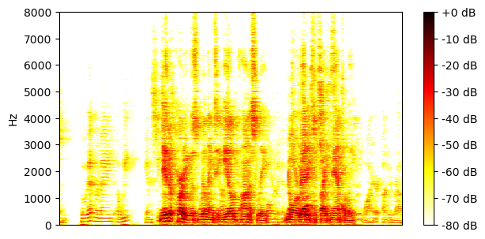
|
||
|---|---|---|---|
| Ground-truth sources |

SI-SDR = -20.87 dB |

SI-SDR = -17.78 dB |

SI-SDR = 16.60 dB |
| Method | Separated source 0 | Separated source 1 | Separated source 2 |
| TI 64ms x 4 frames, BF2 |
SI-SDR = 0.64 dB |
SI-SDR = 1.86 dB |
SI-SDR = 20.31 dB |
| TI 64ms x 4 frames, MN3 |
SI-SDR = 4.87 dB |
SI-SDR = 5.28 dB |
SI-SDR = 23.16 dB |
| TI 64ms x 4 frames, block size 3.2s, BF2 |
SI-SDR = 2.29 dB |
SI-SDR = 3.96 dB |
SI-SDR = 21.81 dB |
| TI 64ms x 4 frames, block size 3.2s, MN3 |
SI-SDR = 3.61 dB |
SI-SDR = 5.03 dB |
SI-SDR = 22.75 dB |
| TV 128ms x 2 frames, BF2 |
SI-SDR = 3.57 dB |
SI-SDR = 5.66 dB |
SI-SDR = 23.10 dB |
| TV 128ms x 2 frames, MN3 |
SI-SDR = 3.52 dB |
SI-SDR = 5.20 dB |
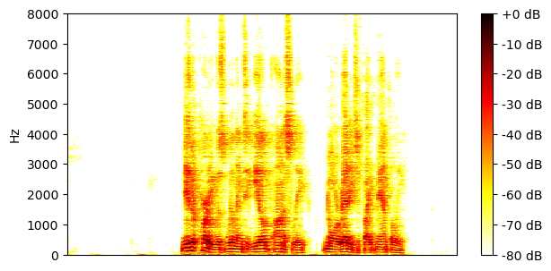
SI-SDR = 22.84 dB |
Example 4
| Mixture |
|
||
|---|---|---|---|
| Ground-truth sources |

SI-SDR = -29.41 dB |

SI-SDR = -29.96 dB |

SI-SDR = 25.31 dB |
| Method | Separated source 0 | Separated source 1 | Separated source 2 |
| TI 64ms x 4 frames, BF2 |
SI-SDR = -5.32 dB |
SI-SDR = -8.90 dB |
SI-SDR = 27.07 dB |
| TI 64ms x 4 frames, MN3 |
SI-SDR = -0.81 dB |
SI-SDR = -4.22 dB |
SI-SDR = 29.22 dB |
| TI 64ms x 4 frames, block size 3.2s, BF2 |
SI-SDR = -2.53 dB |
SI-SDR = -7.22 dB |
SI-SDR = 28.00 dB |
| TI 64ms x 4 frames, block size 3.2s, MN3 |
SI-SDR = -1.04 dB |
SI-SDR = -5.27 dB |
SI-SDR = 29.47 dB |
| TV 128ms x 2 frames, BF2 |
SI-SDR = -0.79 dB |
SI-SDR = -4.59 dB |
SI-SDR = 29.31 dB |
| TV 128ms x 2 frames, MN3 |
SI-SDR = -1.64 dB |

SI-SDR = -14.13 dB |
SI-SDR = 29.25 dB |
Example 5
| Mixture |
|
||
|---|---|---|---|
| Ground-truth sources |

SI-SDR = -10.68 dB |

SI-SDR = 4.10 dB |

SI-SDR = -6.04 dB |
| Method | Separated source 0 | Separated source 1 | Separated source 2 |
| TI 64ms x 4 frames, BF2 |
SI-SDR = -1.57 dB |
SI-SDR = 9.13 dB |
SI-SDR = 3.45 dB |
| TI 64ms x 4 frames, MN3 |
SI-SDR = 4.01 dB |
SI-SDR = 13.24 dB |

SI-SDR = 9.23 dB |
| TI 64ms x 4 frames, block size 3.2s, BF2 |
SI-SDR = -0.77 dB |
SI-SDR = 10.65 dB |
SI-SDR = 6.32 dB |
| TI 64ms x 4 frames, block size 3.2s, MN3 |

SI-SDR = 2.13 dB |
SI-SDR = 12.53 dB |
SI-SDR = 8.46 dB |
| TV 128ms x 2 frames, BF2 |
SI-SDR = 0.44 dB |
SI-SDR = 11.16 dB |
SI-SDR = 7.95 dB |
| TV 128ms x 2 frames, MN3 |
SI-SDR = 1.75 dB |
SI-SDR = 11.83 dB |
SI-SDR = 7.96 dB |
Example 6
| Mixture |

|
||
|---|---|---|---|
| Ground-truth sources |

SI-SDR = 14.06 dB |

SI-SDR = -19.82 dB |

SI-SDR = -15.07 dB |
| Method | Separated source 0 | Separated source 1 | Separated source 2 |
| TI 64ms x 4 frames, BF2 |
SI-SDR = 19.54 dB |
SI-SDR = 0.74 dB |
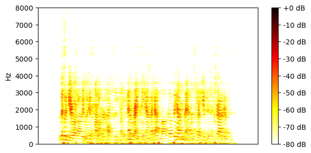
SI-SDR = 3.15 dB |
| TI 64ms x 4 frames, MN3 |
SI-SDR = 23.56 dB |
SI-SDR = 6.84 dB |
SI-SDR = 7.68 dB |
| TI 64ms x 4 frames, block size 3.2s, BF2 |
SI-SDR = 21.12 dB |
SI-SDR = 4.36 dB |
SI-SDR = 4.79 dB |
| TI 64ms x 4 frames, block size 3.2s, MN3 |
SI-SDR = 21.84 dB |
SI-SDR = 5.96 dB |
SI-SDR = 5.74 dB |
| TV 128ms x 2 frames, BF2 |
SI-SDR = 22.32 dB |
SI-SDR = -1.27 dB |
SI-SDR = 1.79 dB |
| TV 128ms x 2 frames, MN3 |
SI-SDR = 22.29 dB |
SI-SDR = 4.88 dB |
SI-SDR = 5.94 dB |
Example 7
| Mixture |

|
||
|---|---|---|---|
| Ground-truth sources |

SI-SDR = -0.40 dB |

SI-SDR = -20.58 dB |

SI-SDR = 0.30 dB |
| Method | Separated source 0 | Separated source 1 | Separated source 2 |
| TI 64ms x 4 frames, BF2 |
SI-SDR = 9.64 dB |
SI-SDR = -7.18 dB |
SI-SDR = 10.43 dB |
| TI 64ms x 4 frames, MN3 |
SI-SDR = 11.57 dB |
SI-SDR = -3.95 dB |
SI-SDR = 12.69 dB |
| TI 64ms x 4 frames, block size 3.2s, BF2 |
SI-SDR = 5.41 dB |
SI-SDR = -7.23 dB |

SI-SDR = 5.63 dB |
| TI 64ms x 4 frames, block size 3.2s, MN3 |
SI-SDR = 3.93 dB |
SI-SDR = -5.29 dB |
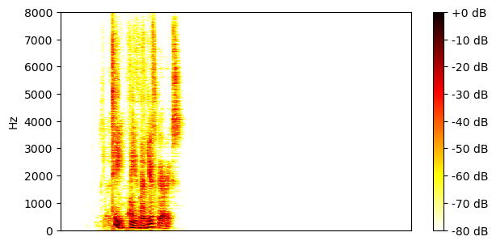
SI-SDR = 5.63 dB |
| TV 128ms x 2 frames, BF2 |
SI-SDR = 9.05 dB |
SI-SDR = -4.95 dB |
SI-SDR = 10.24 dB |
| TV 128ms x 2 frames, MN3 |
SI-SDR = 10.81 dB |
SI-SDR = -3.65 dB |

SI-SDR = 11.86 dB |
Example 8
| Mixture |

|
||
|---|---|---|---|
| Ground-truth sources |
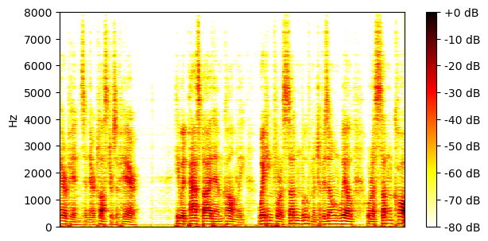
SI-SDR = 9.37 dB |
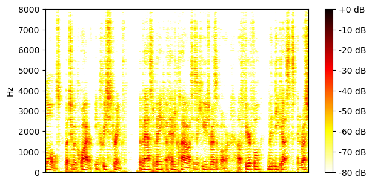
SI-SDR = -10.67 dB |

SI-SDR = -15.87 dB |
| Method | Separated source 0 | Separated source 1 | Separated source 2 |
| TI 64ms x 4 frames, BF2 |
SI-SDR = 14.63 dB |
SI-SDR = 2.93 dB |
SI-SDR = 0.83 dB |
| TI 64ms x 4 frames, MN3 |
SI-SDR = 17.43 dB |
SI-SDR = 6.22 dB |
SI-SDR = 7.25 dB |
| TI 64ms x 4 frames, block size 3.2s, BF2 |
SI-SDR = 15.36 dB |
SI-SDR = 3.64 dB |
SI-SDR = 3.63 dB |
| TI 64ms x 4 frames, block size 3.2s, MN3 |
SI-SDR = 16.40 dB |
SI-SDR = 4.86 dB |
SI-SDR = 5.83 dB |
| TV 128ms x 2 frames, BF2 |
SI-SDR = 16.52 dB |
SI-SDR = 5.26 dB |
SI-SDR = 5.42 dB |
| TV 128ms x 2 frames, MN3 |
SI-SDR = 16.18 dB |
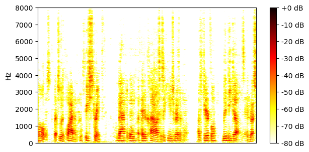
SI-SDR = 4.89 dB |
SI-SDR = 5.66 dB |
Example 9
| Mixture |

|
||
|---|---|---|---|
| Ground-truth sources |
SI-SDR = 4.66 dB |

SI-SDR = -6.17 dB |

SI-SDR = -11.78 dB |
| Method | Separated source 0 | Separated source 1 | Separated source 2 |
| TI 64ms x 4 frames, BF2 |
SI-SDR = 11.76 dB |
SI-SDR = 4.88 dB |
SI-SDR = 0.98 dB |
| TI 64ms x 4 frames, MN3 |

SI-SDR = 16.29 dB |
SI-SDR = 9.27 dB |
SI-SDR = 5.89 dB |
| TI 64ms x 4 frames, block size 3.2s, BF2 |
SI-SDR = 14.02 dB |
SI-SDR = 3.15 dB |
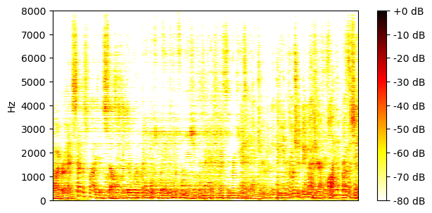
SI-SDR = -2.50 dB |
| TI 64ms x 4 frames, block size 3.2s, MN3 |
SI-SDR = 15.64 dB |
SI-SDR = 7.20 dB |
SI-SDR = 2.26 dB |
| TV 128ms x 2 frames, BF2 |

SI-SDR = 15.01 dB |
SI-SDR = 0.38 dB |

SI-SDR = -4.16 dB |
| TV 128ms x 2 frames, MN3 |
SI-SDR = 15.09 dB |
SI-SDR = 0.65 dB |
SI-SDR = -11.80 dB |
Example 10
| Mixture |
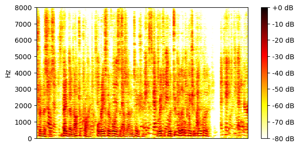
|
||
|---|---|---|---|
| Ground-truth sources |
SI-SDR = -22.38 dB |

SI-SDR = -7.29 dB |

SI-SDR = 7.16 dB |
| Method | Separated source 0 | Separated source 1 | Separated source 2 |
| TI 64ms x 4 frames, BF2 |
SI-SDR = -5.43 dB |
SI-SDR = 8.07 dB |
SI-SDR = 15.94 dB |
| TI 64ms x 4 frames, MN3 |
SI-SDR = 2.46 dB |
SI-SDR = 12.80 dB |
SI-SDR = 20.02 dB |
| TI 64ms x 4 frames, block size 3.2s, BF2 |
SI-SDR = -2.44 dB |
SI-SDR = 10.32 dB |
SI-SDR = 17.80 dB |
| TI 64ms x 4 frames, block size 3.2s, MN3 |
SI-SDR = 1.15 dB |
SI-SDR = 12.07 dB |
SI-SDR = 19.45 dB |
| TV 128ms x 2 frames, BF2 |
SI-SDR = 0.30 dB |
SI-SDR = 12.62 dB |
SI-SDR = 19.68 dB |
| TV 128ms x 2 frames, MN3 |
SI-SDR = 0.57 dB |

SI-SDR = 11.78 dB |
SI-SDR = 19.35 dB |
Example 11
| Mixture |

|
||
|---|---|---|---|
| Ground-truth sources |
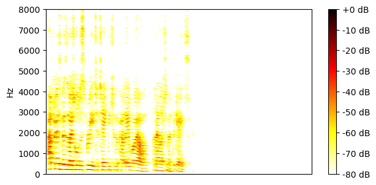
SI-SDR = -21.30 dB |

SI-SDR = -16.77 dB |
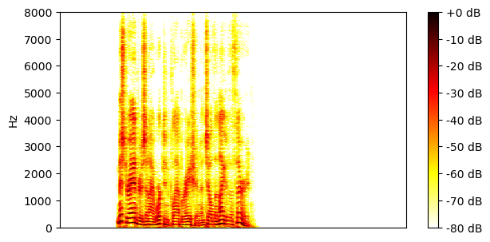
SI-SDR = 15.54 dB |
| Method | Separated source 0 | Separated source 1 | Separated source 2 |
| TI 64ms x 4 frames, BF2 |
SI-SDR = 0.76 dB |
SI-SDR = 1.20 dB |
SI-SDR = 19.58 dB |
| TI 64ms x 4 frames, MN3 |
SI-SDR = 6.49 dB |
SI-SDR = 7.64 dB |
SI-SDR = 23.66 dB |
| TI 64ms x 4 frames, block size 3.2s, BF2 |
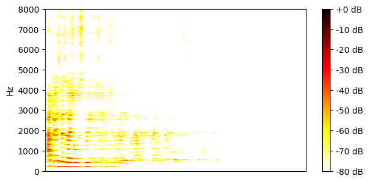
SI-SDR = 3.76 dB |
SI-SDR = 3.81 dB |
SI-SDR = 20.96 dB |
| TI 64ms x 4 frames, block size 3.2s, MN3 |
SI-SDR = 3.74 dB |
SI-SDR = 4.71 dB |
SI-SDR = 22.12 dB |
| TV 128ms x 2 frames, BF2 |
SI-SDR = 4.25 dB |

SI-SDR = 6.04 dB |
SI-SDR = 22.41 dB |
| TV 128ms x 2 frames, MN3 |
SI-SDR = 5.20 dB |
SI-SDR = 8.74 dB |
SI-SDR = 24.11 dB |
Example 12
| Mixture |

|
||
|---|---|---|---|
| Ground-truth sources |

SI-SDR = -13.66 dB |

SI-SDR = -0.73 dB |

SI-SDR = -0.04 dB |
| Method | Separated source 0 | Separated source 1 | Separated source 2 |
| TI 64ms x 4 frames, BF2 |

SI-SDR = -3.98 dB |
SI-SDR = 7.19 dB |
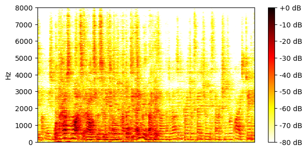
SI-SDR = 6.97 dB |
| TI 64ms x 4 frames, MN3 |
SI-SDR = 3.42 dB |
SI-SDR = 11.69 dB |
SI-SDR = 11.64 dB |
| TI 64ms x 4 frames, block size 3.2s, BF2 |
SI-SDR = -1.72 dB |
SI-SDR = 8.05 dB |
SI-SDR = 7.87 dB |
| TI 64ms x 4 frames, block size 3.2s, MN3 |
SI-SDR = 0.27 dB |

SI-SDR = 9.70 dB |
SI-SDR = 10.26 dB |
| TV 128ms x 2 frames, BF2 |
SI-SDR = -2.16 dB |
SI-SDR = 9.89 dB |
SI-SDR = 9.73 dB |
| TV 128ms x 2 frames, MN3 |
SI-SDR = -0.94 dB |
SI-SDR = 10.58 dB |
SI-SDR = 10.10 dB |
Example 13
| Mixture |

|
||
|---|---|---|---|
| Ground-truth sources |

SI-SDR = -17.54 dB |

SI-SDR = 7.73 dB |

SI-SDR = -8.41 dB |
| Method | Separated source 0 | Separated source 1 | Separated source 2 |
| TI 64ms x 4 frames, BF2 |
SI-SDR = -1.29 dB |
SI-SDR = 16.16 dB |
SI-SDR = 7.69 dB |
| TI 64ms x 4 frames, MN3 |

SI-SDR = 11.68 dB |
SI-SDR = 24.03 dB |
SI-SDR = 14.38 dB |
| TI 64ms x 4 frames, block size 3.2s, BF2 |
SI-SDR = 11.83 dB |
SI-SDR = 21.95 dB |
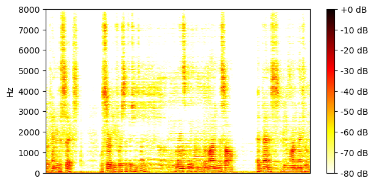
SI-SDR = 12.54 dB |
| TI 64ms x 4 frames, block size 3.2s, MN3 |

SI-SDR = 12.47 dB |
SI-SDR = 23.46 dB |

SI-SDR = 14.05 dB |
| TV 128ms x 2 frames, BF2 |
SI-SDR = 13.60 dB |
SI-SDR = 24.14 dB |
SI-SDR = 14.60 dB |
| TV 128ms x 2 frames, MN3 |
SI-SDR = 11.99 dB |
SI-SDR = 23.53 dB |

SI-SDR = 14.01 dB |
Example 14
| Mixture |

|
||
|---|---|---|---|
| Ground-truth sources |

SI-SDR = -4.40 dB |
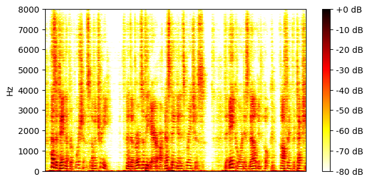
SI-SDR = 4.35 dB |
SI-SDR = -19.97 dB |
| Method | Separated source 0 | Separated source 1 | Separated source 2 |
| TI 64ms x 4 frames, BF2 |
SI-SDR = 8.97 dB |
SI-SDR = 13.58 dB |
SI-SDR = -1.61 dB |
| TI 64ms x 4 frames, MN3 |
SI-SDR = 12.10 dB |
SI-SDR = 16.56 dB |
SI-SDR = 18.43 dB |
| TI 64ms x 4 frames, block size 3.2s, BF2 |
SI-SDR = 11.17 dB |
SI-SDR = 15.60 dB |
SI-SDR = 10.02 dB |
| TI 64ms x 4 frames, block size 3.2s, MN3 |
SI-SDR = 10.68 dB |
SI-SDR = 15.15 dB |
SI-SDR = 19.84 dB |
| TV 128ms x 2 frames, BF2 |

SI-SDR = 11.28 dB |

SI-SDR = 15.71 dB |
SI-SDR = 20.67 dB |
| TV 128ms x 2 frames, MN3 |
SI-SDR = 11.48 dB |
SI-SDR = 15.92 dB |
SI-SDR = 14.29 dB |
Example 15
| Mixture |

|
||
|---|---|---|---|
| Ground-truth sources |

SI-SDR = -20.16 dB |
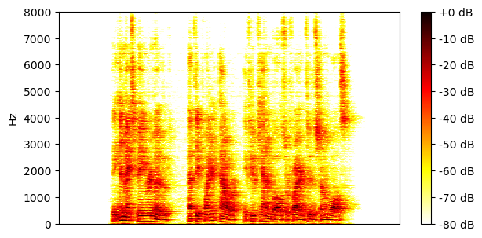
SI-SDR = 11.94 dB |

SI-SDR = -12.88 dB |
| Method | Separated source 0 | Separated source 1 | Separated source 2 |
| TI 64ms x 4 frames, BF2 |
SI-SDR = -2.82 dB |
SI-SDR = 15.51 dB |
SI-SDR = 1.83 dB |
| TI 64ms x 4 frames, MN3 |
SI-SDR = 1.13 dB |
SI-SDR = 16.90 dB |
SI-SDR = 2.98 dB |
| TI 64ms x 4 frames, block size 3.2s, BF2 |
SI-SDR = -1.17 dB |
SI-SDR = 15.28 dB |
SI-SDR = -0.27 dB |
| TI 64ms x 4 frames, block size 3.2s, MN3 |
SI-SDR = -5.72 dB |
SI-SDR = 16.22 dB |

SI-SDR = -1.09 dB |
| TV 128ms x 2 frames, BF2 |
SI-SDR = 0.64 dB |
SI-SDR = 15.46 dB |
SI-SDR = 0.49 dB |
| TV 128ms x 2 frames, MN3 |
SI-SDR = 0.52 dB |
SI-SDR = 15.54 dB |
SI-SDR = 0.95 dB |
Example 16
| Mixture |

|
||
|---|---|---|---|
| Ground-truth sources |

SI-SDR = 4.64 dB |

SI-SDR = -6.00 dB |

SI-SDR = -12.91 dB |
| Method | Separated source 0 | Separated source 1 | Separated source 2 |
| TI 64ms x 4 frames, BF2 |
SI-SDR = 11.48 dB |
SI-SDR = 5.82 dB |
SI-SDR = -1.69 dB |
| TI 64ms x 4 frames, MN3 |
SI-SDR = 14.37 dB |
SI-SDR = 9.44 dB |
SI-SDR = 3.94 dB |
| TI 64ms x 4 frames, block size 3.2s, BF2 |
SI-SDR = 12.15 dB |
SI-SDR = 7.59 dB |
SI-SDR = -0.13 dB |
| TI 64ms x 4 frames, block size 3.2s, MN3 |
SI-SDR = 13.41 dB |
SI-SDR = 8.69 dB |
SI-SDR = 1.90 dB |
| TV 128ms x 2 frames, BF2 |
SI-SDR = 13.49 dB |
SI-SDR = 9.36 dB |
SI-SDR = -0.29 dB |
| TV 128ms x 2 frames, MN3 |
SI-SDR = 13.75 dB |
SI-SDR = 8.49 dB |
SI-SDR = 1.89 dB |
Example 17
| Mixture |

|
||
|---|---|---|---|
| Ground-truth sources |

SI-SDR = -23.30 dB |

SI-SDR = 14.56 dB |

SI-SDR = -15.04 dB |
| Method | Separated source 0 | Separated source 1 | Separated source 2 |
| TI 64ms x 4 frames, BF2 |
SI-SDR = -5.75 dB |
SI-SDR = 19.92 dB |
SI-SDR = 5.59 dB |
| TI 64ms x 4 frames, MN3 |
SI-SDR = -2.67 dB |
SI-SDR = 23.34 dB |
SI-SDR = 12.19 dB |
| TI 64ms x 4 frames, block size 3.2s, BF2 |
SI-SDR = -6.12 dB |
SI-SDR = 21.25 dB |
SI-SDR = 9.23 dB |
| TI 64ms x 4 frames, block size 3.2s, MN3 |
SI-SDR = -21.33 dB |
SI-SDR = 21.83 dB |
SI-SDR = 11.44 dB |
| TV 128ms x 2 frames, BF2 |
SI-SDR = -23.72 dB |
SI-SDR = 21.33 dB |
SI-SDR = 9.36 dB |
| TV 128ms x 2 frames, MN3 |
SI-SDR = -32.43 dB |
SI-SDR = 21.42 dB |
SI-SDR = 10.38 dB |
Example 18
| Mixture |
|
||
|---|---|---|---|
| Ground-truth sources |

SI-SDR = -13.78 dB |

SI-SDR = 10.43 dB |
SI-SDR = -13.50 dB |
| Method | Separated source 0 | Separated source 1 | Separated source 2 |
| TI 64ms x 4 frames, BF2 |
SI-SDR = 2.27 dB |
SI-SDR = 15.70 dB |
SI-SDR = 2.17 dB |
| TI 64ms x 4 frames, MN3 |
SI-SDR = 6.55 dB |
SI-SDR = 19.51 dB |
SI-SDR = 6.88 dB |
| TI 64ms x 4 frames, block size 3.2s, BF2 |
SI-SDR = -0.41 dB |
SI-SDR = 17.02 dB |
SI-SDR = -2.74 dB |
| TI 64ms x 4 frames, block size 3.2s, MN3 |
SI-SDR = 0.44 dB |

SI-SDR = 18.64 dB |
SI-SDR = -0.67 dB |
| TV 128ms x 2 frames, BF2 |
SI-SDR = -0.08 dB |
SI-SDR = 18.68 dB |
SI-SDR = -2.73 dB |
| TV 128ms x 2 frames, MN3 |
SI-SDR = -0.08 dB |
SI-SDR = 18.70 dB |
SI-SDR = -1.97 dB |
Example 19
| Mixture |

|
||
|---|---|---|---|
| Ground-truth sources |

SI-SDR = 7.85 dB |

SI-SDR = -10.99 dB |

SI-SDR = -11.67 dB |
| Method | Separated source 0 | Separated source 1 | Separated source 2 |
| TI 64ms x 4 frames, BF2 |
SI-SDR = 13.09 dB |
SI-SDR = 1.42 dB |
SI-SDR = 2.78 dB |
| TI 64ms x 4 frames, MN3 |
SI-SDR = 16.85 dB |
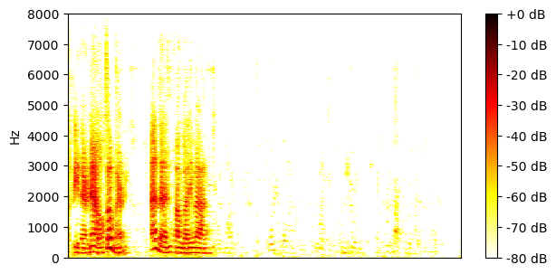
SI-SDR = 8.44 dB |
SI-SDR = 5.66 dB |
| TI 64ms x 4 frames, block size 3.2s, BF2 |

SI-SDR = 14.80 dB |
SI-SDR = 3.81 dB |

SI-SDR = 2.71 dB |
| TI 64ms x 4 frames, block size 3.2s, MN3 |
SI-SDR = 16.45 dB |
SI-SDR = 6.99 dB |
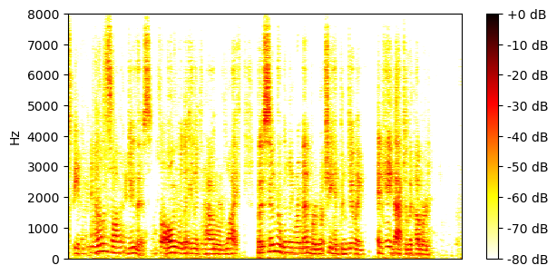
SI-SDR = 4.55 dB |
| TV 128ms x 2 frames, BF2 |
SI-SDR = 16.10 dB |
SI-SDR = 5.30 dB |

SI-SDR = 3.53 dB |
| TV 128ms x 2 frames, MN3 |
SI-SDR = 15.94 dB |
SI-SDR = 5.23 dB |
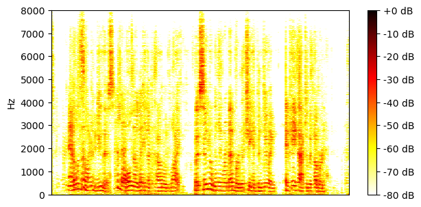
SI-SDR = 3.29 dB |
Example 20
| Mixture |

|
||
|---|---|---|---|
| Ground-truth sources |

SI-SDR = 2.36 dB |
SI-SDR = -13.69 dB |
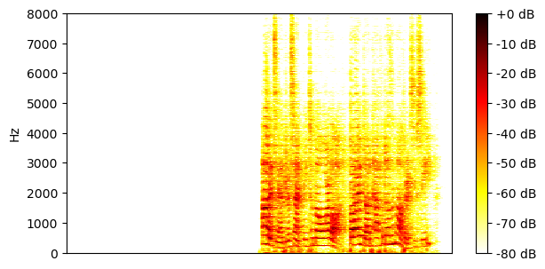
SI-SDR = -3.26 dB |
| Method | Separated source 0 | Separated source 1 | Separated source 2 |
| TI 64ms x 4 frames, BF2 |
SI-SDR = 11.32 dB |
SI-SDR = -0.23 dB |
SI-SDR = 8.73 dB |
| TI 64ms x 4 frames, MN3 |
SI-SDR = 15.45 dB |
SI-SDR = 11.01 dB |
SI-SDR = 13.30 dB |
| TI 64ms x 4 frames, block size 3.2s, BF2 |
SI-SDR = 12.98 dB |
SI-SDR = 4.64 dB |
SI-SDR = 11.33 dB |
| TI 64ms x 4 frames, block size 3.2s, MN3 |
SI-SDR = 14.52 dB |
SI-SDR = 7.92 dB |
SI-SDR = 12.76 dB |
| TV 128ms x 2 frames, BF2 |
SI-SDR = 13.91 dB |
SI-SDR = 6.93 dB |
SI-SDR = 12.36 dB |
| TV 128ms x 2 frames, MN3 |
SI-SDR = 14.10 dB |
SI-SDR = 9.34 dB |
SI-SDR = 11.86 dB |